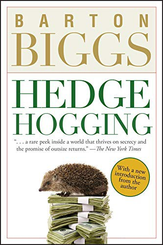

巴顿·比格斯（Barton Biggs）1955年从耶鲁大学英语系毕业，服过海军陆战队役、教过英语，1961年才进入E. F. Hutton做证券分析。1965年他参与创办Fairfield Partners，亲身经历1960年代末的狂热和1970年的流动性枯竭。1973年加入摩根士丹利后，他建立研究部门和投资管理业务，并成为广受关注的全球策略师；Wiley的作者资料记载，他在《机构投资者》调查中多次位列美国策略师第一，1996至2003年居全球策略师首位。2003年，七十岁的比格斯与马达夫·达尔（Madhav Dhar）、西里尔·穆勒-贝尔托（Cyril Moulle-Berteaux）离开摩根士丹利，创办Traxis Partners，管理规模很快超过十亿美元。《Hedgehogging》写于这次重新创业之后，Wiley于2006年出版初版，320页、ISBN 978-0-471-77191-3。中信出版社2007年出版张桦、王小青译本《对冲基金风云录》，ISBN为978-7-5086-0761-0。
书的中心不是某套选股公式，而是Traxis成立后的运营压力。第三章记录一次失败的原油空头：原油涨到每桶约四十八美元，基金年内一度亏损约7%，长期客户撤资，基金中的基金质疑团队是否违反受托责任；紧接着第四章标题便是"Short Selling Is Not for Sissies"。这笔交易说明判断最终可能正确仍不够，借券成本、追加保证金、客户耐心和价格路径会决定基金能否等到结果。第五、六章把筹资写成体力活——2003年3月，三位创始人在佛罗里达The Breakers酒店向约五百名投资者推销新基金；当时对冲基金行业的管理规模已从1990年的约三百六十亿美元向2004年底的一万亿美元以上膨胀。比格斯写尽调问卷、路演、赎回、卖空借券和净值压力，也写基金经理在业绩好时扩大生活开支、在业绩差时又被固定成本困住。标题"Hedgehogging"把hedge fund与hedgehog做成双关："刺猬"反复寻找橡果，经理则反复寻找能贡献绝对回报的机会。
人物章节包括朱利安·罗伯逊、乔治·索罗斯以及多位化名经理，最后一章还讨论约翰·梅纳德·凯恩斯作为职业投资者的记录。第九、十章讨论长期市场周期与抄底的危险，第十二章以"Groupthink Stinks"处理群体共识；第十八章"The Trouble with Being Big"专门处理规模问题：资产增加会让小机会失去意义，也会迫使经理持有更流动、更接近指数的标的。不过它不是透明的口述史：比格斯在作者说明中明确表示，为保护隐私改动了姓名、地点和时间，有些人物是多个原型拼成的"复合人物"。读者不能把书中每个性格特征反向认定给某位真实经理。这个处理牺牲了可核查性，却让作者能写出奖金、婚姻、嫉妒、派系和客户压力如何进入投资决策。比如他把基金经理的"确信"拆成几个可观察的代价：是否愿意承受集中持仓的波动，是否能在客户赎回时保持流动性，是否把政治好恶混进交易，以及成功后是否因自负扩大风险。
耶鲁大学首席投资官大卫·斯文森（David Swensen）在推荐语中写道："Barton Biggs writes about markets with greater style, clarity, and insight than any other observer of the Wall Street scene."《金融时报》2005年11月30日书评认为它比每年大量出版的致富指南更有用，随后又调侃："But will Biggs ever eat lunch in this town again?"两句放在一起，正好说明本书的长处和风险：它的价值来自圈内细节，圈内细节又经过文学加工。若要学习基金结构、费用和风险控制，还需配合正式资料；若要理解为什么正确观点也可能因仓位、时点、赎回和个人压力变成失败交易，原油空头、路演和复合人物提供了比抽象"保持纪律"更具体的材料。